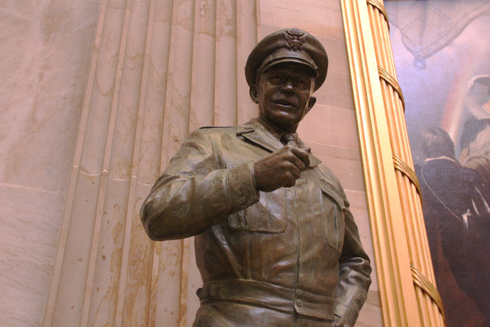
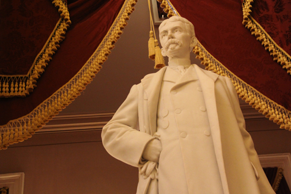
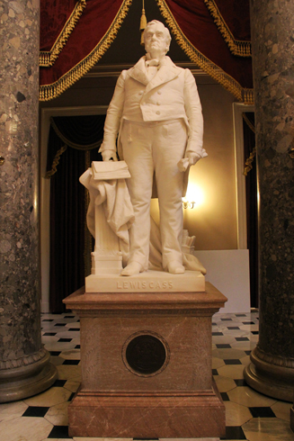
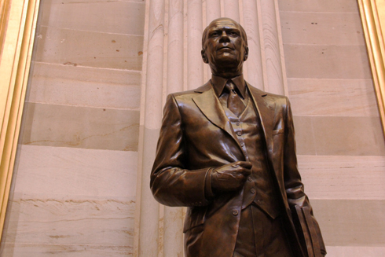

The faces of Statuary Hall: a state-by-state look at the collection
Alaska
Arkansas
Colorado
Connecticut
Delaware
Florida
Georgia
Hawaii
Idaho
Illinois
Indiana
Kentucky
Louisiana
Maine
Maryland
Massachusetts
Minnesota
Mississippi
Missouri
Montana
Nebraska
New Hampshire
New Jersey
New Mexico
New York
North Carolina
North Dakota
Oklahoma
Oregon
Pennsylvania
Rhode Island
South Carolina
South Dakota
Tennessee
Texas
Utah
Vermont
Virginia
Washington
West Virginia
Wisconsin
Wyoming
Alabama
In 2009, Alabama replaced its statue of Jabez Curry, a Confederate officer, with Keller's likeness. Curry's statue was moved to Samford University in Birmingham, Ala.
1880-1968
An illness, likely meningitis or scarlet fever, left Helen Keller deaf, blind and mute when she was 19 months old. Her childhood teacher, Anne Sullivan, taught her how to communicate by touch using Braille. She was able to "speak" using a typewriter and verbalize basic sounds. Despite her disabilities, Keller graduated from college, wrote an autobiography and advocated for a variety of social causes, including women's suffrage. She is buried at the National Cathedral in Washington.
Located in the Capitol Visitor Center; donated in 2009
1836-1906
Confederate Lt. Gen. Joseph Wheeler was elected to the U.S. House of Representatives following the Civil War. After the conflict, he advocated for reconciliation between the North and the South. He also served in the Spanish-American War and led a brigade during the 1899-1900 Philippine Insurrection.
Located in Statuary Hall; donated in 1925
Alaska
1904-1968
"Architect of Statehood" Edward Bartlett was an advocate for Alaskan statehood. He served as secretary of the Alaska Territory and was the territory's congressional delegate. After Alaska became the 49th state in 1959, Bartlett was elected as one of Alaska's first senators, a position he held until 1967. According to the Library of Congress, he authored more bills that became law than any other congressman in U.S. history.
Located in the House wing; donated in 1971
1887-1974
Ernest Gruening pursued a career in journalism before becoming a politician. He was editor of The Nation and the New York Post but changed careers when he was appointed to the U.S. delegation to the 1933 Inter-American Conference. In 1939, he was appointed Governor of Alaska Territory, a position he held for 14 years. Pending Alaskan statehood, he was elected to the U.S. Senate in 1958. He served as a senator for 10 years.
Located in the Capitol Visitor Center; donated in 1977
Arizona
Fundraising is almost complete and an artist has begun work on a statue of 1964 Republican presidential candidate Barry Goldwater. When complete, Goldwater's statue will replace the one of Greenway.
1872-1926
A distinguished soldier John Campbell Greenway worked his way up through the ranks to become a brigadier general in the Army. He was one of Theodore Roosevelt's "Rough Riders" during the Spanish-American War and also served in World War I. During his Army career, he was awarded a Silver Star and the Distinguished Service Cross from the U.S., in addition to the Croix de Guerre, the Legion of Honor and the Croix de l'Etoile from France.
Located in Statuary Halll; donated in 1930
1645-1711
Eusebio Kino was born in Italy. He worked as a missionary in Mexico for two years and in the 1680s moved to what would become the American southwest. Trained in cartography and astronomy, he was one of the first scientific explorors in the region, where he mapped an area of land that was 200 miles long by 250 miles wide. Because of his maps, roads were built to connect previously inaccessible areas with settlements in the region. He was the first to prove that Baja California is a penninsula, not an island as once thought.
Located in the Capitol Visitor Center; donated in 1965
Arkansas
1872-1926
Lawyer Uriah Rose was a charter member of the American Bar Association and served as its president from 1901-1902. During the Civil War, he opposed succession but remained loyal to Arkansas. President Theodore Roosevelt appointed him as a delegate to the Second Peace Conference at The Hague in 1907, which established rules for the collection of war debts and the role of neutral countries during wartime.
Located in Statuary Hall; donated in 1917
1854-1916
Democrat James Clarke was governor of Arkansas before being elected to the U.S. Senate in 1903, where he served as president pro tempore during the 63rd and 64th Congresses. As a Senator, he broke with his party and supported President Theodore Roosevelt's push to build the Panama Canal. Clarke was also a supporter of workmen's compensation legislation and an opponent of literacy tests for immigrants.
Located in the Capitol Visitor Center; donated in 1921
California
In 2009, California added Reagan's statue to the collection. It replaced the statue of orator Thomas King, who urged California not to become its own republic during the Civil War.
1911-2004
Former President Ronald Reagan helped end the Cold War, survived an assassination attempt in 1981, dealt with the Iran-Contra Affair and pushed for "Reaganonmics" supply-side economic policies during his two-term administration (1981-1989). Prior to serving as the 40th President, Reagan was elected governor of California and worked as an actor, appearing in more than 60 films. He was born in Illinois.
Rotunda, donated in 2009
1713-1784
Spanish-born Catholic priest Junipero Serra established missionaries throughout California that were all self-sufficient. Serra's missions continued for 50 years after his death.
Located in Statuary Hall; donated in 1931
Colorado
1871-1953
Medical science pioneer Florence R. Sabin is remembered for achieving many "firsts" for women in her field. She was the first woman to: graduate from John Hopkins Medical School, become a full professor at a medical college, serve as president of the American Association of Anatomists and be named a lifetime woman member of the National Academy of Science. During Sabin's career, her research focused on the lymphatic system and tuberculosis. Her advocacy for health care reform led to Colorado's passage of the "Sabin Health Laws," which are credited with reducing tuberculosis rates throughout the state.
Located in the Hall of Columns; donated in 1959
1931-1982
Astronaut Jack Swigert was one of three people abroad the Apollo 13 moon mission. Though it was aborted mid-mission due to the rupture of an oxygen tank onboard the spaceship, Swigert spent nearly six days in space. He was elected to the U.S. House of Representatives in 1982 but died shortly before he would have taken office.
Located in the Capitol Visitor Center; donated in 1997
Connecticut
1721-1793
Medical science pioneer Roger Sherman He was the only person to sign the Continental Association, which established a trade boycott against Britain in 1774; the Declaration of Independence; the Articles of Confederation; and the Constitution. After the Constitution was rafified, Sherman served in the U.S. House and later the Senate.
Located in the Crypt; donated in 1872
1710-1785
Connecticut governor Jonathan Trumball was the only colonial governor to support the Revolution. He helped Gen. George Washington to recruit soldiers and garner war supplies.
Located in the House wing; donated in 1872
Delaware
1796-1856
Lawyer John Clayton was first elected to the U.S. Senate in 1829 as a member of the Whig Party. He resigned his seat in 1836 an accepted an appointment as Chief Justice of the Delaware Supreme Court. He served in the Senate agian from 1845 to 1849 before becoming secretary of state under President Zachary Taylor.
Statue placed: 1934, Capitol Visitor Center
1728-1784
Revolutionary War supporter Caesar Rodney was elected the first president of Delaware in 1778. He participated in the First and Second Congressional Congresses, voted in favor of the Declaration of Independence and pushed for Delaware to ratify the the Articles of the Confederation.
Located in the Crypt; donated in 1934
Florida
1871-1953
John Gorrie invented the ice machine. He started his career in the medical industry but later abandoned his practice to study refrigeration. Most of his refrigeration inventions failed when his partner died and he ran out of money.
Located in Statuary Hall; donated in 1914
1824-1893
Confederate Gen. Edmund Smith resigned from the U.S. Army in 1861 to help organize the Confederate Army of the Shenandoah. He was wounded in Manassas, Va., during the first major land battle of the Civil War. After the war, he pursued a career in academics, working as chancellor of the University of Nasville and a mathematics professor.
Capitol Visitor Center; donated in 1922
Georgia
1815-1878
Surgeon Crawford Long was the first to use ether as an anestetic. He used the drug in 1830 as he operated on a young boy, and later use it regularly on women during childbirth.
Located in the Hall of Columns; donated in 1959
1812-1883
Vice President of the Confederacy Alexander Stephens initially opposed secession. He served in the U.S. House of Representatives before and after the Civil War.
Located in Statuary Hall; donated in 1927
Idaho
1865-1940
Isolationist William Borah served as Chairman of the Senate Foreign Relations Committee from 1925 to 1933. Borah also sponsored bills that created the Department of Labor and the Children's Bureau, an agency within the Department of Health that today deals with child abuse prevention, foster care and adoption issues.
Capitol Visitor Center; donated in 1917
1836-1904
George Shoup served as the first Governor of Idaho, a position he held for only two months before becoming a U.S. Senator instead. Prior to Idaho's statehood, he was governor of Idaho Territory and a member of the Idaho Republican National Committee.
Located in Statuary Hall; donated in 1910
Hawaii
1840-1889
Belgian Father Damien devoted his career as a Catholic missionary to helping the sick at a leper settlement in Molokai, Hawaii. He contracted leprosy in 1884 and died of the disease in 1889. Father Damien became a Catholic saint in 2009.
Located in Hall of Columns; donated in 1969
Approximately 1758-1819
King Kamehameaha I united the Hawaiian islands for the first time and established the Kingdom of Hawaii in 1810. He encouraged trade among the various islands and developed alliances with Pacific colonial powers to preserve Hawaii's independence during his rule. Kamehameha's statue weighs more than six tons, making it one of the heaviest in the Statuary Hall Collection. Every year on June 11, which is known as Kamehameha Day in Hawaii, the statue in the draped with Hawaiian leis and hula dancers perform in the Capitol Visitor Center.
Capitol Visitor Center; donated in 1969
Illinois
1806-1879
Irish-born James Shields remains the only person to represent three different states in the U.S. Senate. Throughout his political career, Shoup was elected in Illinois, Minnesota and Missouri. He served as a brigadier general in the Union Army during the Civil War.
Located in the Hall of Columns; donated in 1893
1839-1898
Social reformer Frances Willard founded and served as president of the Women's Christian Temperance Union. She was also president of the Evanston College for Women from 1871 to 1874.
Located in the Capitol Visitor Center; donated in 1905
Indiana
1823-1877
Radical Republican Oliver Morton served as Governor of Indiana from 1861-1867 and was a member of the U.S. Senate from 1867-1877. During the Civil War, he was a close ally of President Abraham Lincoln, and he was known to arrest his political enemies.
Located in the Senate wing; donated in 1900
1827-1905
Union Army Gen. Lewis Wallace and his troops are credited with protecting Cincinnati from Confederate advances in September 1862. He is the author of Ben Hur.
Located in the Capitol Visitor Center; donated in 1969
Iowa
Iowa will unveil its new statue of 20th century environmentalist Norman Borlaug at the U.S. Capitol on March 25. Borlaugh's statue will replace the one of Harlan, which will be moved to Iowa Wesleyan College.
1820-1899
James Harlan served three terms as a U.S. senator and was appointed secretary of the interior under President Andrew Johnson. As secretary, he faced multiple allegations of corruption, including bribery and vote buying charges.
Located in the Hall of Columns; donated in 1910
1813-1894
Samuel Kirkwood was Governor of Iowa during the Civil War, serving from 1861-1864. He was also a Senator and was appointed secretary of the interior by President James Garfield.
Located in Statuary Hall; donated in 1913
Kansas
In 2003, Kansas became the first state to replace one of its Statuary Hall statues. Eisenhower was added to the collection in place of George Glick, a 19th century governor. Plans are underway to replace the Ingalls statue with one of American aviation pioneer Amelia Earhart.
1890-1969
Republican Dwight Eisenhower was elected President in 1952 and 1956. As president, he oversaw the end of the Korean War, the start of school desegreation and the perpetuation of the Cold War with the Soviet Union. Prior to his election, he was in charge of all U.S. military forces in Europe during World War II, which included overseeing the D-Day landing in France.

Located in the Rotunda; donated in 2003
1833-1900
John Ingalls served 18 years in the U.S. Senate, where he supported labor and agricultural interests over those of big business. In 1877, he was selected as president pro tempore of the Senate.

Located in Statuary Hall; donated in 1905
1890-1969
Republican Dwight Eisenhower was elected President in 1952 and 1956. As president, he oversaw the end of the Korean War, the start of school desegreation and the perpetuation of the Cold War with the Soviet Union. Prior to his election, he was in charge of all U.S. military forces in Europe during World War II, which included overseeing the D-Day landing in France.
Located in the Rotunda; donated in 2003
1833-1900
John Ingalls served 18 years in the U.S. Senate, where he supported labor and agricultural interests over those of big business. In 1877, he was selected as president pro tempore of the Senate.
Located in Statuary Hall; donated in 1905
Kentucky
1777-1852
Henry Clay served as a U.S. Senator and member of the House in the mid-1800s. He authored the Missouri Compromise of 1820 and the Compromise of 1850, attempts to resolve conflicts between the North and the South. Clay was secretary of state during the administration of President John Quincy Adams and was the Whig candidate for president in 1832. Clay's only formal education was three years in a small Virgina school.
Located in Statuary Hall; donated in 1929.
1771-1830
In 1809, surgeon Ephraim Mcdowell became the first person to successfully perform an ovariotomy, the removal of an ovarial tumor, in the U.S. He removed a urinary stone and repaired a hernia for President James Polk. He is the great great grandfather of John Greenway, whom Arizona selected to be part of the National Statuary Hall Collection.
Located in the Capitol Visitor Center; donated in 1929
Louisiana
1893-1935
Huey Long was elected Governor of Louisiana in 1928. In 1932, he took his seat as a U.S. Senator. He supported a "Share the Wealth" program that would have allowed the government to confiscate large estates in order to give every family $5,000. He was assassinated at the statehouse in Baton Rouge, La., on Sept. 10, 1935.

Located in Statuary Hall; donated in 1941
1845-1921
Confederate Army soldier Edward White was appointed Chief Justice of the United States Supreme Court by President William Howard Taft in 1910. He sat on the Louisiana State Supreme Court, was elected to the U.S. Seante and served as a U.S. Supreme Court associate justice before being elevated to the Chief Justice position.
Located in Capitol Visitor Center; donated in 1955
Maine
1809-1891
Hannibal Hamlin was President Abraham Lincoln's first vice president. He was governor of Maine for about two months in 1857 and served in the U.S. House and Senate.
Located in Hall of Columns; donated in 1969
1768-1852
William King helped the people of Maine to separate from Massachusetts and form their own state in 1820. After Maine was granted statehood, King was elected its first governor, a position he held for one year. King was also a successful merchant.
Located in House wing; donated in 1878
Maryland
1737-1832
Continuental Congress delegate Charles Carroll signed the Declaration of Independence and later helped draft the Maryland constiution. After the U.S. Constitution was ratified, he served as Maryland's first U.S. senator from 1789 to 1792. He was prohibited from entering politics during colonial times because he was a Roman Catholic.
Located in the Crypt; donated in 1903
1715-1783
In 1781 and 1782 John Hanson, served as President of the United States in Congress Assembled under the government established by the Articles of the Confederation. He contributed to the development of the first Post Office department, the national bank, the adoption of a uniform coinage system and the establishment of the first U.S. consular service.
Located in the Hall of Columns; donated in 1903
Massachusetts
1722-1803
Founding Father Samuel Adams was a co-founder of the Sons of Liberty, a group of American patriots that protested the colonial abuses of the British government. He helped to organize the Boston Tea Party and led other colonists in protest against the Sugar Act of 1764, the 1765 Stamp Act and the Townshend Acts in 1767. He attended the First and Second Continental Congress and signed the Declaration of Independence.
Located in the Crypt; donated in 1876
Approximately 1587-1649
English-born Puritan John Winthrop was appointed governor of the Massachusetts Bay Colony in 1629. He immigrated to the colony in 1630 and served 12 non-consecutive terms as its governor.
Located in the Hall of Columns; donated in 1876
Michigan
A statue of U.S. Sen. Zachariah Chandler was replaced by one of President Gerald Ford in 2011. Chandler served as mayor of Detriot and participated in the founding of the national Republican Party in 1854. His statue was added to the collection in 1913.
1782-1866
Lewis Cass served as the governor of Michigan Territory from 1813 to 1831. In 1831, he became secretary of war under the administration of President Andrew Jackson. He was elected to the U.S. Senate in 1845 and ran as the Democratic nominee for president in 1848.

Located in Statuary Hall; donated in 1889
1913-2007
Gerald Ford served as president and vice president of the U.S. without being elected to either office. He was appointed vice president after Spiro Agnew's resignation and became president after Richard Nixon left office during the Watergate scandal. Ford also served 13 terms in the U.S House.

Located in the Rotunda; donated in 2011
1782-1866
Lewis Cass served as the governor of Michigan Territory from 1813 to 1831. In 1831, he became secretary of war under the administration of President Andrew Jackson. He was elected to the U.S. Senate in 1845 and ran as the Democratic nominee for president in 1848.
Located in Statuary Hall; donated in 1889
1913-2007
Gerald Ford served as president and vice president of the U.S. without being elected to either office. He was appointed vice president after Spiro Agnew's resignation and became president after Richard Nixon left office during the Watergate scandal. Ford also served 13 terms in the U.S House.
Located in the Rotunda; donated in 2011
Minnesota
1816-1894
Henry Rice lobbied for the bill that established Minnesota Territory and served as the territory's first delegate to the U.S. Congress. His work in Washington led to Minnesota's statehood in 1858. He served as one of the state's first two senators.
Located in Statuary Hall; donated in 1916
1836-1920
Academic Maria Sanford was one of the first women to become a college professor in the U.S. She taught at Swarthmore College from 1871 to 1880 and later joined the faculty at the University of Minnesota. She advocated for women's rights and supported equal education opportunities for African Americans.
Located in the Capitol Visitor Center; donated in 1958
Mississippi
1808-1889
After Mississippi seceded from the Union in 1861, Jefferson Davis resigned his U.S. Senate seat to become commander of Mississippi's troops. Shortly after, he was elected president of the Confederacy. Davis was charged with treason when the war ended, but was never tried.
Located in Statuary Hall; donated in 1931
1826-1897
During the Civil War, lawyer James George served as a colonel in the Confederate Army. He was captured twice in battle and, while imprisoned, taught a law course to fellow detainees. After the war, he was appointed chief justice of the Mississippi Supreme Court.
Statue placed: 1969, Capitol Visitor Center; placed in
Missouri
1782-1858
Lawyer Thomas Benton represented Missouri for 30 years in the U.S. Senate, where he championed the interests of small western farmers. Benton lost his Senate re-election campaign in 1850 because of his strong opposition to slavery. He was later elected to one term in the U.S House.
Located in Statuary Hall; placed in 1889
1821-1875
Slavery opponent Francis Blair was one of the leaders who decided that Missouri should stay with the Union instead of joining the Confederacy during the Civil War. He served in the U.S House and was a major general in the U.S. Army. At the end of the war, he was elected to the U.S. Senate.
Located in the Hall of Columns; donated in 1899
Montana
1880-1973
Suffragette Jeannette Rankin was the first woman to serve in the U.S House of Representatives, where she was represented the state of Montana from 1916 to 1918 and 1940 to 1942. The Repubican voted against U.S. entry into World War I and World War II and was the sole member of Congress to vote against declaring war against Japan after Pearl Harbor.
Located in the Capitol Visitor Center; donated in 1985
1864-1926
Artist Charles Russell painted and sculpted images of the American frontier, including Native Americans, cattle roundups and other scenes that were foreign to his Eastern audience. His art appeared at the 1904 World's Fair in St. Louis and at the London Dore Galleries in 1914. His studio was located in Great Falls, Mont.
Located in Statuary Hall; donated in 1959
Nebraska
1860-1925
"The Great Commoner," William Jennings Bryan, was the Democratic nominee for president in 1896. The strong orator gave fiery speeches across the U.S., urging Congress to drop the gold standard and, instead, mint silver coins. Bryan later was appointed secretary of state by President Woodrow Wilson.
Located in Statuary Hall; donated in 1937
1832-1902
J. Sterling Morton is the founder of Arbor Day. He served as President Grover Cleveland's secretary of agriculture and encouraged the administration to establish national forest reservations.
Capitol Visitor Center; donated in 1937
Nevada
1844-1891
The daughter of a powerful Native American chief, Sarah Winnemucca was an interpreter and negotiator between her people and the U.S. Army. She gave more than 300 speeches to win public support for her tribe and met with President Rutherford Hayes on their behalf in 1880. Her autobiography, Life among the Piutes: Their Wrongs and Claims, is the first book to be written by a female Native American. It was published in 1883.
Located in the Capitol Visitor Center; donated in 2005
1876-1954
As a U.S. senator, Patrick McCarran was one of the chamber's most vocal anti-communists. He sponsored bills that required Communists to register themselves and banned Communists from working in the federal government. A senator for 22 years, he was also responsible for legislation that tightened American immigration policies.
Located in the Hall of Columns; donated in 1960
New Hampshire
1728-1822
Continental Army Maj. Gen. John Stark served in several key Revolutionary War battles, including the Battle of Bennington, Vt., in which he led approximately 2,000 ill-trained American troops to victory against professional European soldiers. Before the Revolution broke out, he fought in the French and Indian War.
Located in the Crypt; donated in 1894
1782-1852
U.S. House member and, later, Sen. Daniel Webster achieved nationwide recognition because of his opposition to nullification, which would have allowed states to overrule federal legislation, and other states' rights issues. He was appointed secretary of state by three presidents: William Henry Harrison, John Tyler and Millard Fillmore.
Located in Statuary Hall; donated in 1894
New Jersey
1814-1862
A French-trained cavalryman Philip Kearny served as an aide-de-camp to two U.S. Army generals: Alexander Macomb and Winfield Scott. During the Mexican War of 1846, he shattered a bone in his left arm and the arm had to be amputated.
Located in the Hall of Columns; donated in 1888
1730-1781
Richard Stockton attended the Continental Congress and signed the Declaration of Independence. After the congress adjourned, Stockton was captured by the British and imprisoned for one month.

Located in the Crypt; donated in 1888
New Mexico
Approximately 1630-1688
Po'pay was a leader of the Pueblo indian tribe who lived on land that is now part of New Mexico. The tribe suffered under the control of Spanish settlers in the region. The Pueblo Indians were forced to convert to Christianity and to provide the Spanish with food and labor. In 1680, Po'pay led the successful Pueblo Revolt against the Spanish, which ensured the survival of the Pueblo culture in the area.
Located in the Capitol Visitor Center; donated in 2005
1888-1962
Sen. Dennis Chavez supported the rights of Native Americans and Puerto Ricans. He advocated for new trade agreements with Latin America and he was a strong supporter of the Fair Employment Practices Commission, which mandated that companies selected for government contracts do not discriminate on the basis of race or religion. Chavez is the only Latino depicted in the Statuary Hall Collection.
Located in the Senate wing; donated in 1966
New York
1739-1812
George Clinton was the first governor of New York. During the Revolutioary War, he publicly shamed British symphathizers by seizing and selling their estates, which kept taxes low for the supporters of independence. He served as vice president to Presidents Thomas Jefferson and James Madison.
Located in the Senate wing; donated in 1873
1746-1813
Robert Livingston helped to write the Declaration of Independence. He was the first secretary of foreign affairs, serving during President George Washington's administration. He negotiated the Lousiana Purchase from France for President Thomas Jefferson in 1803.
Located in Statuary Hall; donated in 1875
North Carolina
1859-1912
Charles Aycock was elected governor of North Carolina in 1900. The Democrat is remembered for his progressive education policies, including higher salaries for teachers, longer academic years and modernized school buildings. He died in 1912 while campaigning for a U.S. Senate seat.
Located in the Crypt; donated in 1932
1830-1894
Confederate Col. Zebulon Vance was elected governor of North Carolina in 1862. Under his leadership, North Carolina was the only Confederate state to keep its court system fully functioning during the Civil War and to preserve the writ of heabus corpus, which guarantees that prisoners cannot be held without first being brought before a judge to determine if the government has the right to detain them. After the war, he was re-elected governor and served in the U.S. Senate from 1879 to 1894.
Located in Statuary Hall; donated in 1916
North Dakota
1859-1937
Lawyer John Burke served as governor of North Dakota from 1907 to 1913. He made many reforms, including the establishment of a tax commission and lobbying reglations in an attempt to try to rid the state of political corruption. President Woodrow Wilson appointed him U.S. treasurer in 1913.
Located in Statuary Hall; donated in 1963
Approximately 1788-1812
Sakakawea, a name that means "Bird Woman," traveled west with Meriwether Lewis and William Clark. She guided them along their route; established contact between local Native Americans and the expedition team; and helped to identify edible plants and berries. Her son, Jean Baptiste, the baby she is depicted carrying, was born during the journey.
Located in the Capitol Visitor Center; donated in 2003
Ohio
Ohio is planning to replace its statue of Allen with one of Thomas Alva Edison. The state is currently fundraising and expects to select an artist later this year.
1803-1879
Quaker William Allen served in the U.S. House, the U.S. Senate and as governor of Ohio. He was a supporter of slavery and a strong critic of President Abraham Lincoln.
Located in Statuary Hall; donated in 1887
1831-1881
Republican James Garfield was the 20th resident of the U.S. He served for 200 days before he was shot on the National Mall on July 2, 1881, by Charles Guiteau, a one-time supporter who was angry that he did not receive an ambassadorship from the administration. Garfield died 11 weeks later from his wounds.
Located in the Rotunda; donated in 1886
1803-1879
Quaker William Allen served in the U.S. House, the U.S. Senate and as governor of Ohio. He was a supporter of slavery and a strong critic of President Abraham Lincoln.
Located in Statuary Hall; donated in 1887
1831-1881
Republican James Garfield was the 20th resident of the U.S. He served for 200 days before he was shot on the National Mall on July 2, 1881, by Charles Guiteau, a one-time supporter who was angry that he did not receive an ambassadorship from the administration. Garfield died 11 weeks later from his wounds.
Located in the Rotunda; donated in 1886
Oklahoma
1879-1935
Cowboy Will Rogers was a top-paid actor during the 1920s and 1930s. He made 71 movies and published more than 4,000 newspaper columns. He often spoke of his Native American heritage and was known as "The Cherokee Kid." He died in an Alaskan plane crash on Aug. 15, 1935.
Located in the House wing; donated in 1939
Approximately 1770-1843
Sequoyah developed the Cherokee alphabet between 1809 and 1821. The alphabet includes symbols for the Cherokee language's 86 sounds. He represented the Cherokee nation in Washington and helped those who had been forced by the government to move west. He was the first Native American to be honored in the National Statuary Hall Collection.
Located in Statuary Hall; donated in 1917
Oregon
1803-1845
Missionary Jason Lee journeyed west to Oregon in 1834. Lee helped to draft the petition to establish a territorial government and, in 1838, traveled back east to deliver it to Washington. He founded the Indian Manual Labor Training School, which later became Willamette University.
Located in Statuary Hall; donated in 1953
1784-1857
Canadian John McLoughlin chose to become an American citizen and move to Oregon City, near the end of the Oregon Trail. There he ran a store that catered to new settlers. He is known as "The Father of Oregon," a title that was officially bestowed upon him by the Oregon Legislative Assembly in 1957.
Located in the Capitol Visitor Center; donated in 1953
Pennsylvania
1765-1815
Robert Fulton built the first steamboat. His boat, named The Clermont, sailed from New York City to Albany, N.Y., on Aug. 17, 1807. Fulton also built early prototypes of submarines, mines and torpedoes.
Located in Statuary Hall; donated in 1889
1846-1807
Continental Army Maj. Gen. John Muhlenberg commanded a regiment from the Shenandoah Valley during the Revolutionary War. Following the war, he served in the Pennsylvania legislature and as the state's vice president from 1785 to 1788.
Located in the Crypt; donated in 1889
Rhode Island
1742-1786
Nathanael Greene served the Continental Army as commander of the South during the Revolutionary War. Greene and his troops were responsible for the liberation of Charleston, S.C., the last Southern city held by the British, on Dec. 14, 1782.
Located in the Crypt; donated in 1870
Approximately 1603-1683
English-born Puritan Roger Williams moved to the Massachusetts Bay Colony because he believed that the Puritans should separate themselves from the Church of England, which had power in his homeland. Williams' teachings, however, were too radical for the other settlers. He was banished from Massachusetts and founded Rhode Island Colony.
Located in the Hall of Columns; donated in 1872
South Carolina
1782-1850
Democrat John Calhoun was elected vice president during the administrations of Presidents John Quincy Adams and Andrew Jackson. He was appointed secretary of war by President James Monroe and secretary of state by President John Tyler. He also served in the U.S. Senate. He was a prominent "war hawk" but suggested nullificiation, the ability of states to overrule the federal government, as a way to preserve the Union.
Located in the Crypt; doanted in 1910
1818-1902
Confederate Lt. Gen. Wade Hampton traded his cotton for horses and arms and started a cavalry legion of Civil War troops. He and his men fought in many battles, including Gettysburg. After the war, he served as governor of South Carolina from 1876-1879 and was elected to the U.S. Senate at the conclusion of his gubernatorial term.
Located in Capitol Visitor Center; donated in 1929
South Dakota
1838-1912
Brig. Gen. William Beadle ensured that land be reserved throughout South Dakota for schools. He drafted a provision in the state's constitution, adding strict requirements detailing if and when these lands could be sold. Similiar provisions were added into the North Dakota, Montana, Washington and Idaho Wyoming state constitutions, thus preserving 22 million acres of land in the American West for educational purposes.
Located in Statuary Hall; donated in 1938
1838-1889
Educator Joseph Ward helped to found the first high school and college in Dakota Territory. He also advocated for South Dakota's statehood. Ward drafted much of the state's constitution and wrote the state motto, "Under God the People Rule."
Located in the Capitol Visitor Center; donated in 1963
Tennessee
1767-1845
"Old Hickory" Andrew Jackson was elected to the White House in 1828 and was re-elected four years later. Jackson's presidency followed his military success during the War of 1812. He and his troops defeated the British in the 1815 Battle of New Orleans and invaded Florida, which was held by the Spanish. From 1823 to 1825, he represented Tennessee in the U.S. Senate.

Located in the Rotunda; donated in 1928
1745-1815
John Sevier was elected the first governor of Tennessee and later represented the state in the U.S. Senate and House. Before achieving political success in Tennessee, he was a lieutenant colonel in the Revolutionary War and was elected governor of the state of Franklin, an independent portion of North Carolina whose settlers desired their own statehood. North Carolina regained control of Franklin using military force, and Sevier was pardoned for rebellious actions.
Located in Statuary Hall; donated in 1931
Texas
1793-1836
"The Father of Texas," Stephen Austin, led Texas' first successful colonization by bringing 300 American families to settle there. He later presided at the Texas Convention of 1863, which proclaimed Texas' independence from Mexico. Austin served as commander-in-chief of the Texas troops who marched on the Mexican headquarters in San Antonio, Tex., and won.
Located in the Hall of Columns; donated in 1905
1793-1863
Sam Houston served as president of the Texas Republic from 1836 to 1838 and 1841 to 1845. After Texas became a state in 1845, he was elected to the U.S. Senate, where he supported attempts for compromise between the North and the South. He voted against Texas secession.
Located in Statuary Hall; donated in 1905
Utah
1906-1971
The "Father of Television" Philo Farnsworth invented an early TV system and transmitted the first electronic picture in 1927. The inventor received more than 150 patents during his career and his work also contributed to the development of radar and the electron microscope.
Located in the Capitol Visitor Center; donated in 1990
1801-1877
Bringham Young, president of the Church of Jesus Christ of Latter-day Saints, coordinated the emigration of some 70,000 Mormons to Utah's Salt Lake Valley in 1847. He also helped to establish the city of Nauvoo, Ill., in the 1840s.
Located in Statuary Hall; donated in 1950
Vermont
1738-1789
Continental Army Col. Ethan Allen first organized the Green Mountain Boys as a way for the men to defend their property. During the Revoluntary War, Allen's men worked with British Col. Benedict Arnold to capture Fort Ticonderoga from the Redcoats. He was later captured in battle and imprisoned for two years. When the war ended, he lobbied for Vermont's statehood but died two years before it became a state.
Located in Statuary Hal; donated in 1876
1791-1860
Jacob Collamer represented Vermont in the U.S. House of Representatives, served as postmaster general during President Zachary Taylor's administration and was elected to the U.S. Senate in 1855. He was an anti-slavery Republican.
Located in the Senate wing; donated in 1881
Virginia
1807-1870
Robert E. Lee, Confederate commander of the Army of Northern Virginia, surrendered to Gen. Ulysses Grant at Appomattox Court House on April 9. 1865. Prior to the Civil War, he fought in the Mexican-American War. After surrendering, Lee was paroled and selected as president of Washington College (now Washington and Lee) in Lexington, Va.
Located in the Crypt; donated in 1809
1732-1799
Comdr. of the Continental Army George Washington was unanimously selected as the first president of the United States by the Electoral College in 1789. He served two terms before declining a third, setting a precendent for future commanders-in-chief. He attended the First and Second Continental Congresses; the Annapolis Convention, which called for a constutional convention to replace the Articles of Confederation; and the 1787 Constitutional Convention.
Located in the Rotunda; donated in 1934
Washington
1823-1902
Canadian-born Mother Joseph and a group of five missionaries built 11 hospitals, seven academies, five Indian schools and two orpanages throughout present-day Washington, Oregon, Idaho and Montana. Mother Joseph, who is considered to be one of the first architects in the Pacific Northwest, designed all her projects and supervised their construction.
Located in the Capitol Visitor Center; donated in 1980
1802-1847
Doctor Marcus Whitman and his wife founded a settlement called Waiilatp near present-day Walla Walla, Wash. He provided medical care to Native Americans in the area. He also assisted with the Great Migration of 1843 to the West, which paved the way for the Oregon Trail. The Whitmans were murdered in their home on Nov. 29. 1847, by Indians who believed that Whitman's medical treatment was responsible for the deaths of their loved ones.
Located in Statuary Hall; donated in 1953
West Virginia
1848-1893
Confederate soldier John Kenna was elected to the U.S. House in 1876 and the Senate in 1883. He was a champion of legislation to develop a U.S. railroad system.
Located in the Hall of Columns; donated in 1901
1814-1899
After Virginia succeeded, Francis Pierpont organized Unionists to break away from the Confederacy. Under Pierpont's leadership, the group pushed for recognition as a new state. West Virginia was admitted into the Union in 1863.
Located in Statuary Hall; donated in 1910
Wisconsin
1637-1675
Missionary and explorer Jacques Marquette reached the confluence of the Mississippi and Missouri Rivers in 1673. Warned by Native Americans about the Spanish settlers to the south, he turned back north to avoid being captured. He established a settlement in Kaskaskia, present-day Illinois, in October 1674.
Located in the House wing; donated in 1896
1855-1925
Progressive Robert La Follette served as governor of Wisconsin and represented the state in the U.S. House and Senate. He championed many political reforms, most notably the direct election of senators, and opposed political bosses. He was againist American invovlement in World War I.
Located in Statuary Hall; donated in 1929
Wyoming
1814-1902
Suffragette Esther Morris was the first woman to hold a judicial office in the modern world. She was appointed a justice of the peace in Wyoming's South Pass district in 1870. She was also active in the women's suffrage movement. In 1869, Wyoming Territory became the first of any U.S. state or territory to give its women the right to vote.
Located in the Hall of Columns; donated in 1960
Approximately 1800-1900
Native American warrior Washakie negotiated with western Army leaders to ensure that more than 3 million acres in Wyoming's Wind River country be preserved for his people, who remain in control of this land today. He was the first known Native American to receive a full military funeral.
Located in the Capitol Visitor Center; donated in 2000